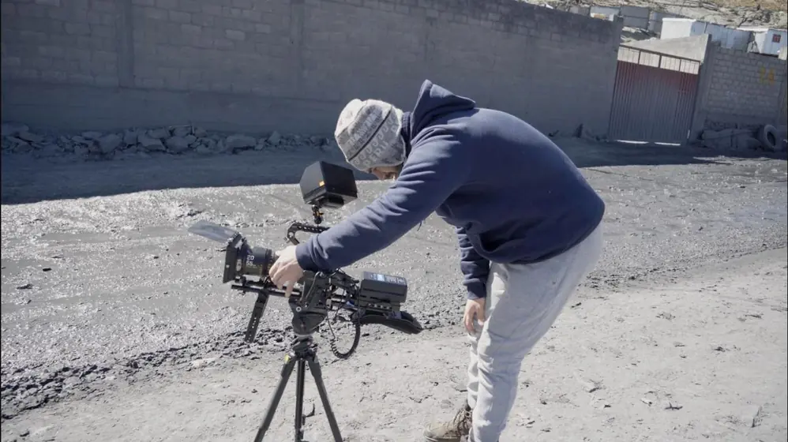
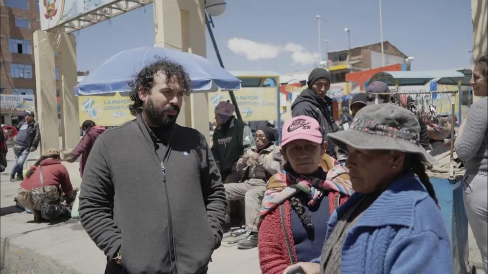
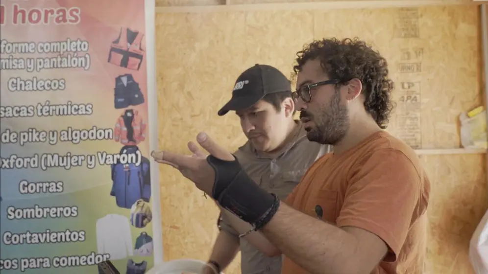
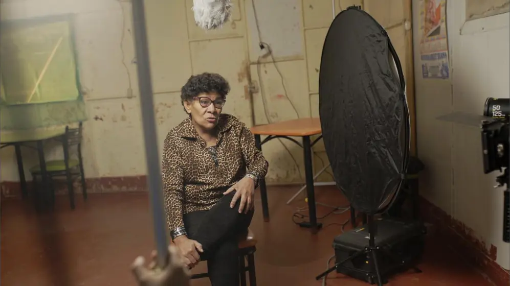
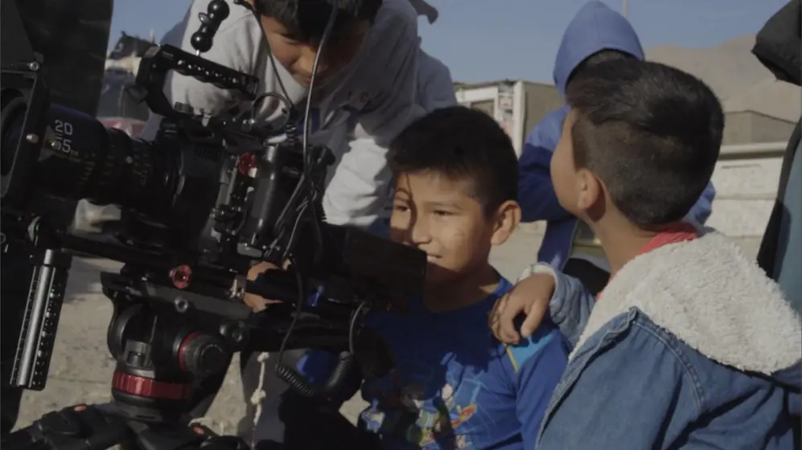
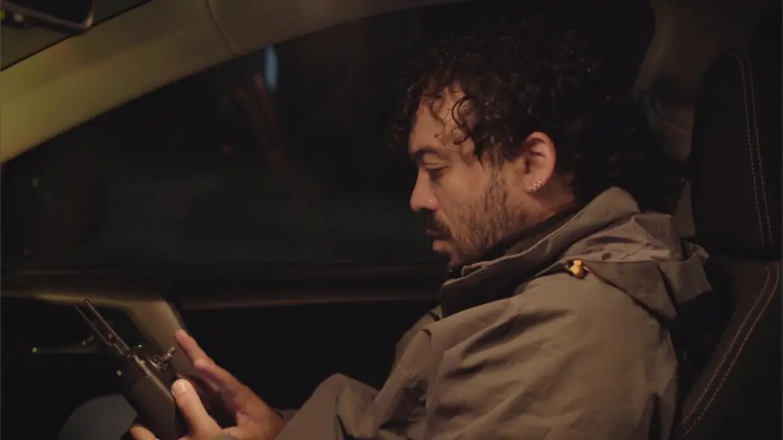

Documental · 2025
Entre polvo
Entre polvo
y sueños
0:00
0:00
No se pudo cargar el video en este navegador. Escríbeme y te envío el enlace directo.
Ellas no solo buscan mineral.
Tres años de rodaje en los socavones y las pampas del Perú, acompañando a un grupo de mujeres mineras. No son mineras informales sin más: buscan formalizarse, que las reconozcan y una vida mejor para los suyos.
La película es un puente entre ellas y el mundo: una historia de lucha filmada a pie de mina, para que su voz llegue lejos.
Perú · Documental · Digital 2K · Español
Subtítulos en francés, inglés y turco
Ficha
- Dirección
- Jose Adrianzen
- Guion
- Jose Adrianzen
- Producción general
- Jose Adrianzen y Solidaridad
- Producido por
- Bálu · Solidaridad
- País
- Perú
- Formato
- Digital 2K
- Idioma
- Español
- Subtítulos
- Francés, inglés y turco

Premios
Mejor documentalTITAN International Film FestivalSídney, Australia · 3.ª edición · 2025
Mejor guion13.º Noida International Film FestivalNoida, India · 2026
Best of FestivalDocuvision International Film FestivalLewes, Delaware, EE. UU. · 2026
Mención especial13.º Noida International Film FestivalNoida, India · 2026
Selecciones oficiales
- 21.º International Labour Film FestivalSelección oficial · Türkiye · 2026
- The Workers Unite Film FestivalSelección oficial · Nueva York, EE. UU. · 2025
- London Vision Film FestivalSelección oficial · Londres, Reino Unido · 2025
- LISBIFF Lisboa Indie Film FestivalSelección oficial · Lisboa, Portugal · 2025
- Cine Invisible “Film Sozialak”Selección oficial · Bilbao, España · 2026
- FIMMER · Festival Internacional de MediometrajesSección oficial · Manzanares El Real, España · 2025
- ImoIFF Creatives International Film FestivalSelección oficial · Imo, Nigeria · 2025
- Cinego Shorts · Shorts on the MoveSelección oficial · Karachi, Pakistán
- Film Hour · Bodhak StudioSelección oficial · India
- Cinematic Luxe Indie ShowcaseWinter Fest 26 · Cincinnati, EE. UU.
- 20.ª Muestra Cine + Video IndígenaSelección oficial · Chile · 2026
Fotogramas


Detrás de cámara







